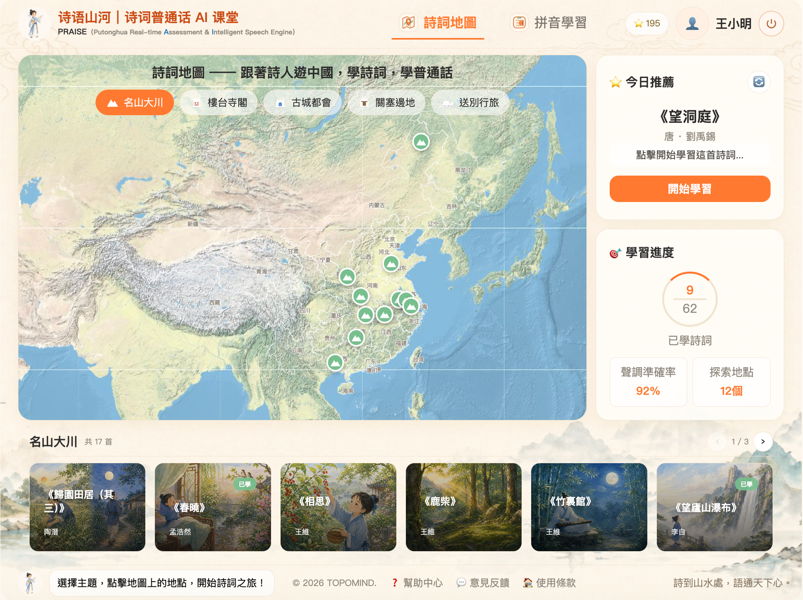
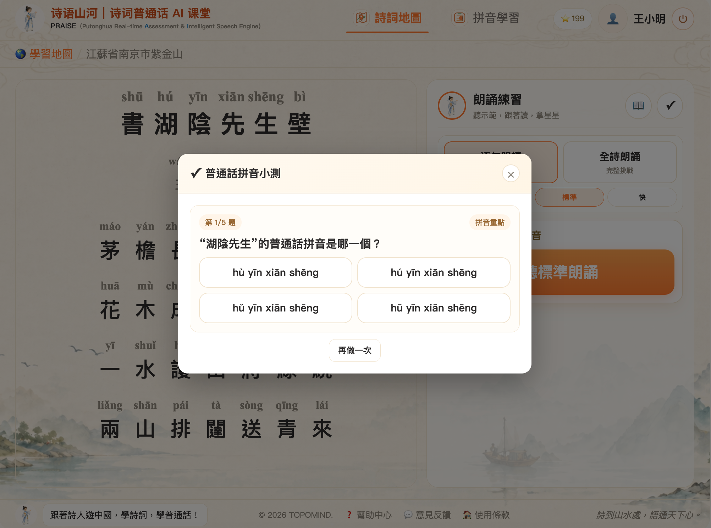
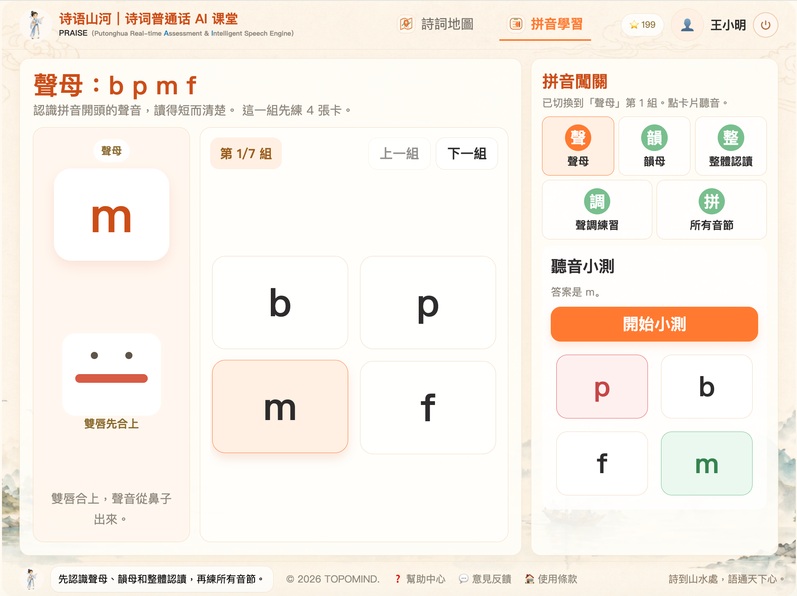

詩語山河
詩詞普通話 AI 課堂
詩到山水處，語通天下心。跟著詩人遊中國，學詩詞，學普通話。
TopoMind 旗下 AI 普通話教育產品，結合詩詞地圖、自研語音聲學評價模型與學生語音數據本地化保護。
以詩詞為經，以地圖為緯。
我們將中國千年的名勝古跡與經典詩詞編織成一張互動的知識網絡，
讓每一個漢字的發音，都根植於真實的山水情境之中。
應用 AI 實時語音測評引擎 PRAISE，輔助普通話發音評估、糾音與個性化練習。
四大特色，全面賦能
詩詞地圖探索
跟著詩人遊中國，發現名勝古蹟與詩詞之美。在互動地圖上點擊標記點，探索黃鶴樓、泰山、蘇州等文化聖地，每一處都關聯著數首經典詩詞，讓學習者身臨其境地感受詩人創作時的地理與文化背景。
AI 跟讀糾音
智能評測發音，即時反饋，準確提升。PRAISE 自研普通話語音聲學評價模型能分析聲母、韻母、聲調、流利度與完整度，並給出星級評分和針對性練習建議，幫助學生快速糾正發音問題。
小詩仙陪學
AI 老師貼心陪伴，激發學習興趣。可愛的小詩仙角色以生動有趣的方式引導學生朗讀詩詞、理解詩意，通過互動對話和鼓勵機制，讓孩子在輕鬆愉快的氛圍中愛上普通話學習。
教師班級管理
班級數據一目了然，教學管理更高效。教師後台提供完整的班級學習進度追蹤、個人發音分析報告、練習記錄回放等功能，讓老師能夠精準掌握每位學生的學習狀態，制定針對性的教學計劃。
本地完成語音評估，守護學生數據
從普通話聲學評價到學生語音資料管理，詩語山河以本地化部署降低外傳風險，讓學校、老師與家長更安心。
自研普通話語音聲學評價模型
PRAISE 針對普通話教學場景設計，從學生朗讀語音中評估發音準確度、聲調穩定性、韻母清晰度、流利度與完整度，將抽象的口語表現轉化為可追蹤、可回看、可改進的學習證據。
- 精細聲學評估 對聲母、韻母、聲調、停頓與朗讀完整度進行多維度分析，支援學生個性化練習。
- 學生數據本地化 語音數據可在本地伺服器完成儲存、處理與評估，減少敏感資料外傳風險。
- 教師可控可查 評分結果、練習記錄與班級進度集中呈現，方便老師跟進學習狀態與家校溝通。
直觀精美，一用就會
每一個界面都經過精心設計，兼顧古典美學與現代易用性

沉浸式登入頁面
水墨山水背景搭配小詩仙角色，讓學生和老師一進入就感受到詩詞文化的氛圍

互動詩詞地圖
在中國地圖上探索詩詞地點，按類別篩選，查看今日推薦與學習進度
AI 詩詞學習與評測
大字注音展示詩詞內容，AI 老師即時評分反饋，幫助精準提升發音

詩詞拼音學習測試
根據詩詞內容AI生成拼音測試題目，測試拼音認讀情況

拼音基礎學習
拼音聲母、韻母、整體認讀、聲調、音節學習與練習，掌握拼音拼讀
教師班級管理後台
查看班級活躍度、學生列表、個人練習記錄與發音評分詳情
詩到山水處，語通天下心
開啟你的詩詞普通話之旅
提供完整的普通話學習解決方案。 讓每一位學生都能在詩詞的浸潤中，自然而然地掌握標準普通話。